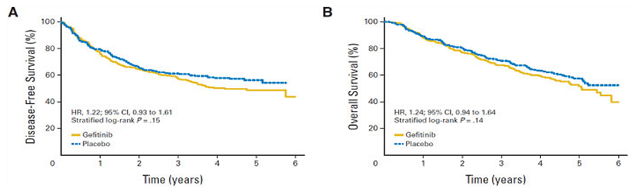

MÓDULO 2 : Tratamiento de los estadios precoces

2.5 Nuevo tratamiento adyuvante CPNM
Tratamiento dirigido contra dianas moleculares en el tratamiento adyuvante del CNMP
Existen varios estudios fase III con fármacos dirigidos contra dianas en el tratamiento adyuvante del cáncer de pulmón
En base a la eficacia demostrada con agentes dirigidos contra dianas moleculares en carcinoma de pulmón avanzado se iniciaron estudios que han evaluado el papel de estos fármacos en adyuvancia.
En la la siguiente tabla se resumen los estudios fase III realizados con fármacos dirigidos en adjuvancia.
Tratamiento dirigido contra dianas moleculares en el tratamiento adyuvante del carcinoma no microcítico de pulmón. BEVACIZUMAB
En base a la eficacia demostrada de Bevacizumab asociado a la quimioterapia de primera línea en pacientes con carcinoma de pulmón avanzado, el estudio ECOG 1505, evaluó su eficacia en combinación con quimioterapia adyuvante con cisplatino en pacientes con carcinoma de pulmón resecado en estadios IB( > 4 cm) a IIIA.
En este estudió un total de 1501 pacientes fueron randomizados a 4 ciclos de un doblete de quimioterapia con cisplatino en combinación con vinorelbina, docetaxel, gemcitabina o pemetrexed ± bevacizumab 15 mg/kg cada 3 semanas durante un año. No hubo diferencias en SLP ni en SG con la adición de bevacizumab al doblete de QT siendo las correspondientes HR de 0.99 (IC 95% 0, 82-1.19) y 0.99 (IC 95%, 0.86-1.15).
ECOG-E1505: Quimioterapia adyuvante ± bevacizumab en esradios IB-IIIA
Tratamiento dirigido contra dianas moleculares en el tratamiento adyuvante del carcinoma no microcítico de pulmón. EGFR
El primer ensayo realizado con fármacos anti EGFR fue el estudio, JBR.19, que randomizó pacientes con estadio IB-IIIA a gefitinib adyuvante o placebo durante 2 años.
Los pacientes fueron estratificados por estadio, histología, radioterapia post- operatoria, sexo y quimioterapia adyuvante.
El número de pacientes reclutados fue inferior al inicialmente previsto y 503 pacientes fueron randomizados a recibir gefitinib 250 mg/día vía oral o placebo. El protocolo fue modificado en 2003 para permitir el uso de quimioterapia adyuvante.
251 pacientes recibieron gefitinib y 252 recibieron placebo Los resultados demostraron que no hubo aumento de la supervivencia global ni de la supervivencia libre de enfermedad con gefitinib vs placebo.
La mediana de supervivencia en el brazo de gefitinib fue de 5,1 años y no alcanzada en el brazo de placebo, con una HR = 1,23 a favor de placebo, aunque no estadísticamente significativo.
Se observó una tendencia similar con la supervivencia libre de enfermedad: mediana de 4,2 años con gefitinib y aún no alcanzada con placebo, con una HR = 1,22 que tampoco fue estadísticamente significativo.
JBR.19: Gefitinib adyuvante en pacientes con estadios I-IIIA resecados
JBR.19: SG y SLE no mejoraron con gefitinb vs placebo
Se encontraron mutaciones de EGFR en el 21% de los pacientes. Cuando se examinó la asociación entre biomarcadores y supervivencia global, los datos de la mutación de EGFR fueron bastante sorprendentes, ya que en los pacientes con mutaciones activadoras del EGFR, que deberían haber sido predictivas para una sensibilidad a los inhibidores de la tirosín-kinasa del EGFR, la mediana de supervivencia en este grupo fue de 3,7 años con gefitinib vs 5,1 años con placebo (HR: 1,58; P = 0,160, no significativa).
Las conclusiones del estudio JBR.19 son limitadas por el pequeño número de pacientes, sin embargo, en este estudio gefitinib no mejora la supervivencia libre de enfermedad ni la supervivencia global en pacientes con CNMP en estadios precoces resecados.
JBR. 19: Análisis exploratorio de biomarcadores: Mutación EGFR
El estudio RADIANT ha estudiado el tratamiento adyuvante con erlotinib, otro inhibidor de la tirosín-kinasa del EGFR, en 973 pacientes con estadios IB-IIIA resecados que expresaban EGFR por inmunohistoquímica o amplificación por FISH. Los pacientes fueron randomizados 2:1 a erlotinib o placebo.
Los pacientes podían recibir hasta 4 ciclos de quimioterapia adyuvante, a discreción del investigador, antes de la randomización.
Los pacientes se estratificaron por histología, edad, sexo, quimioterapia adyuvante y estado de fumador. Erlotinib o placebo fueron administrados a la dosis de 150 mg/día vía oral (dosis estándar) durante 2 años. El objetivo primario fue la supervivencia libre de enfermedad.
Radiant: Quimioterapia adyuvante ± erlotinib en pacientes con CNMP EGFR+
No se han encontrado diferencias significativas en la SLP (mediana, 50.5 meses para erlotinib versus 48.2 meses para placebo; hazard ratio, 0.90; 95% CI, 0.74 to 1.10; P = 0.324).
En los 161 pacientes (16.5%) con mutación del EGFR, la SLP favoreció al brazo con erlotinib (mediana 46.4 v 28.5 meses; hazard ratio, 0.61; 95% CI, 0.38 to 0.98; P = 0.039), pero los resultados no fueron significativos debido al análisis jerarquizado.
El estudio ADJUVANT evalúa el papel de gefitinib adyuvante en pacientes intervenidos con mutación de EGFR. 483 pacientes estadio II-IIIA intervenidos han sido randomizados a recibir gefitinib adyuvante durante 24 m o 4 ciclos de QT estándar con cisplatino/vinorelbina.
Este estudio llevado a cabo en china ha demostrado un beneficio en SLP de gefitinib con respecto al tratamiento de QT con cisplatino/vinorelbine. La HR fue 0.60 (IC 9550.42-0.87) y la mediana de SLP fue de 28.7 y 16 m respectivamente. Todavía no se han reportado datos de SG.
Actualmente se encuentran en marcha distintos estudios que evalúan el uso de terapias anti EGFR y anti ALK como tratamiento adyuvante en población seleccionada molecularmente:
Inmunoterapia en el tratamiento adyuvante del carcinoma no microcítico de pulmón
La inmunoterapia ha cambiado el paradigma de tratamiento del carcinoma de pulmón avanzado. De ahí el interés de su estudio también en el contexto de la adyuvancia.
Inicialmente el interés se focalizó en las vacunas. El estudio MAGRIT, examinó una vacuna contra la proteína MAGE-A, que se encuentra expresada en aproximadamente el 35% de pacientes con CNMP resecados.
MAGE-A3 es un antígeno específico de tumor que está presente casi exclusivamente en pacientes con cáncer. Este es un ensayo fase III randomizado cuyo objetivo primario es la supervivencia libre de enfermedad.
Los pacientes con estadio IB-IIIA fueron randomizados 2:1 a recibir 13 dosis de una vacuna intramuscular contra MAGE-A3 o un placebo de vacuna. Los pacientes podían haber recibido quimioterapia adyuvante, siendo éste un factor de estratificación.
Magrit: Tratamiento adyuvante con inmunoterapia específica contra MAGE-A3 en pacientes con estadios I-IIIA
Los resultados fueron presentados en el congreso de ESMO de 2014, no hallándose diferencias en la SLP ni en la SG entre los dos brazos de tratamiento.
Las HR fueron 1.02 (IC 95% 0.89-1.18) para SLP y 1.04 (IC 95% 0.86-1.24) para SG. La mediana de SLP fue de 60.5 y 57.9 m respectivamente. La mediana de SG no fue alcanzada en ninguno de los dos brazos.
Magrit: Disease-Free Survival in the Overall Population (ESMO congress)
Actualmente se encuentran en marcha distintos estudios que evalúan el papel de los inhibidores checkpoint antiPD1 y antiPDL1como tratamiento adyuvante de pacientes intervenidos de carcinoma de pulmón. Por el momento no disponemos de resultados.
Estudios en marcha con anti PD1-PDL1
Inmunoterapia como tratamiento NEOadyuvante del carcinoma no microcítico de pulmón
Actualmente se encuentran en marcha distintos estudios que evalúan el papel de los inhibidores checkpoint antiPD1 y antiPDL1como tratamiento NEOadyuvante de pacientes con estadios I-III de carcinoma de pulmón pero por el momento no disponemos de su indicación.
Conclusiones
El tratamiento estándar de los pacientes intervenidos de carcinoma de pulmón estadio II es la administración de 4 ciclos de un doble de QT con cisplatino. Los resultados de los estudios randomizados recientes sugieren que la quimioterapia adyuvante con combinaciones de cisplatino mejora la supervivencia a 5 años entre 5-15%.
En la actualidad, no hay una evidencia clara que apoye el beneficio del uso de quimioterapia adyuvante en pacientes con estadio IB si bien se puede plantear en pacientes con tumores mayores de 4 cm sobre todo si tienen otros factores de riesgo. En pacientes con estadio IA no está indicado el uso de QT adyuvante.
La RT postoperatoria está indicada en pacientes con márgenes quirúrgicos positivos pero no está indicada en estadios I y II completamente resecados.
Una de las líneas de investigación relevantes está en identificar factores moleculares pronósticos y predictivos de respuesta de los pacientes intervenidos, que nos permitan predefinir tratamientos individualizados si bien por el momento no es aplicable a la práctica clínica.
Los estudios actualmente en marcha establecerán el papel como tratamiento adyuvante tanto de la inmunoterapia como de los fármacos antiEGFR y antiALK en población molecularmente seleccionada.